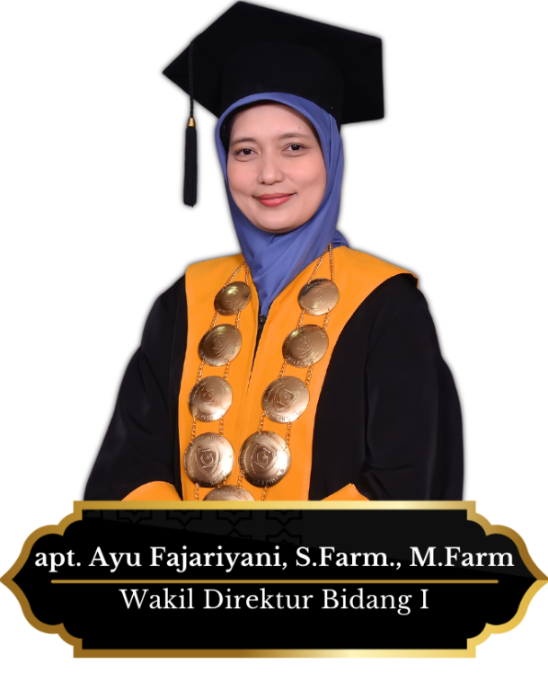

Sejarah, Visi, dan Nilai Kami
Perjalanan Politeknik Bhakti Kartini dalam mencetak tenaga profesional terapan yang siap menjawab kebutuhan industri.

Perjalanan Kami
Pada 30 Januari 2020, Politeknik Bhakti Kartini resmi berdiri berdasarkan Surat Keputusan Mendikbud RI No. 149/M/2020 serta Hasil Akreditasi Politeknik Bhakti Kartini yang resmi ditandatangani oleh Mendikbud RI.
Politeknik Bhakti Kartini berada di bawah naungan Yayasan Amal Bhakti (YAB), yang juga menaungi SMK, Klinik, dan Rumah Sakit Bhakti Kartini.
Visi
“Menjadi Politeknik kebanggaan Bangsa Indonesia dengan mutu terdepan dan berwawasan global pada Tahun 2029.”
Misi
- Perbaikan terus menerus dalam bidang pendidikan dan pengajaran.
- Memberikan ruang kondusif untuk melakukan penelitian bagi seluruh civitas akademik.
- Melaksanakan pengabdian nyata kepada masyarakat secara berkesinambungan.
- Melaksanakan pendidikan berkesinambungan bagi Dosen dan Tenaga Kependidikan.
- Menjalin hubungan strategis dan mitra kerja di seluruh dunia.
- Melakukan pembaharuan berkesinambungan di bidang Teknologi Informasi dan Komunikasi.
Yang Kami Pegang Teguh
Integritas
Menjunjung kejujuran dan tanggung jawab dalam setiap proses pendidikan.
Kompetensi
Mengutamakan keterampilan praktis yang teruji dan relevan dengan industri.
Kolaborasi
Membangun kerja sama erat dengan mitra industri dan komunitas.
Inovasi
Terus beradaptasi dengan perkembangan teknologi dan kebutuhan zaman.
Dipimpin oleh Para Ahli
Yusnita Yusfik, SKM., MKM.
Direktur

apt. Ayu Fajariyani, S.Farm., M.farm
Wakil Direktur Bidang I
Wawan Hermawansyah, S.Kom., M.M.S.I
Wakil Direktur Bidang II
Terakreditasi & Diakui Secara Resmi
Politeknik Bhakti Kartini berada di bawah naungan Yayasan Bhakti Kartini dan seluruh program studinya telah terakreditasi oleh Badan Akreditasi Nasional Perguruan Tinggi (BAN-PT).